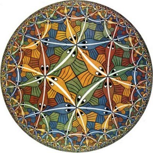
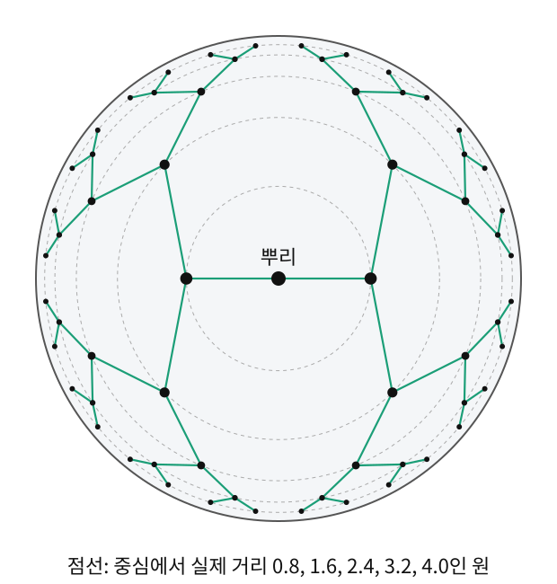
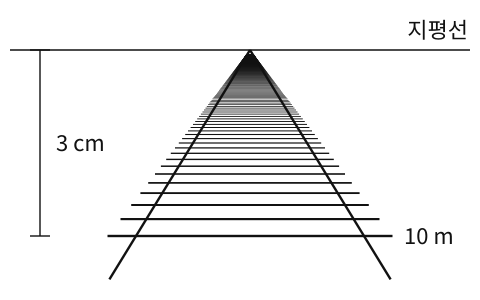

메르카토르 지도는 구면의 극지방을 부풀려 그렸다. 그렇다면 반대로, 가장자리로 갈수록 한없이 줄여 그리는 눈금도 가능할까? 그러면 유한한 그림 안에 무엇을 담을 수 있을까?
역사: 이천 년 동안 증명하려던 약속
에우클레이데스(Euclid)의 『원론』에는 다른 약속들보다 유난히 길고 덜 당연해 보이는 약속이 하나 있었다. 오늘날 흔히 쓰는 꼴로 말하면 「직선 밖의 한 점을 지나 그 직선과 만나지 않는 직선은 하나뿐이다」라는 평행선 공준이다. 수학자들은 오랫동안 이 약속을 나머지 약속들로 증명해 내려 했다. 1733년 이탈리아의 사케리(Giovanni Saccheri)는 이 약속을 부정하면 모순이 생긴다는 것을 보이려고 부정한 쪽의 결과를 길게 끌어냈지만, 실제로는 모순에 이르지 않았는데도 모순을 찾았다고 믿고 멈췄다.
방향을 바꾼 사람들은 모순을 찾는 대신 그 기하를 하나의 기하로 받아들였다. 러시아의 로바쳅스키(Nikolai Lobachevsky)는 1829~1830년에, 헝가리의 보여이(János Bolyai)는 1832년에 따로따로, 만나지 않는 직선이 여럿인 기하를 펴냈다. 가우스는 보여이의 글을 보고 자신도 여러 해 전에 같은 생각에 이르렀지만 펴내지 않았다고 답했다.
그래도 걱정은 남았다. 이 기하가 언젠가 모순에 부딪히지 않는다고 어떻게 믿는가? 1868년 이탈리아의 벨트라미(Eugenio Beltrami)는 이 기하를 익숙한 대상 위에 그려 보였다. 새 기하의 그림을 보통 기하 안에 그릴 수 있으면, 새 기하의 모순은 곧 보통 기하의 모순이 된다. 보통 기하를 믿는 만큼 새 기하도 믿을 수 있게 된 것이다. 아래의 원판 그림도 이런 그림 가운데 하나로, 리만이 1854년 강연에서 처음 적었다.
이 원판에 푸앵카레(Henri Poincaré)의 이름이 붙은 것은 전혀 다른 길에서 그가 이 그림에 닿았기 때문이다. 그는 1880년 무렵 복소 함수의 한 부류(그가 푹스 함수라고 이름 붙인 것)를 연구하고 있었다. 1908년에 쓴 회고에 따르면, 그는 보름 동안 그런 함수가 있을 수 없다는 것을 증명하려다 실패했고, 지질 답사를 떠나 수학을 잊고 있던 어느 날 쿠탕스에서 합승 마차에 발을 올리는 순간 자신이 쓴 변환들이 비유클리드 기하의 변환과 똑같다는 생각이 떠올랐다. 그는 그 자리에서 확인하지 않고 하던 이야기를 이어 갔고, 돌아와서야 차분히 확인했다. 1882년 논문들에서 그는 이 원판을 써서 함수를 다루었다.
원판 위의 줄어드는 눈금
가장자리로 갈수록 한없이 줄여 그리는 눈금의 대표가 푸앵카레 원판 모형이다. 가장자리에서 얼마나 빨리 줄여 그릴지는 여러 가지로 고를 수 있다. 아래 배율은 원판 안 어느 점을 중심으로 옮겨 와도 둘레의 모습이 똑같도록, 곧 공간 어디서나 휜 정도가 같도록 고른 것이다. 반지름 1인 원판 그림 위에서 오른쪽으로 0.01 옮기는 걸음이 실제로 얼마인지, 자리마다 적으면 이렇다.
그림 속 위치
그림 위 0.01 걸음의 실제 길이
계산
중심 (0,0)
0.02
2/(1−0)×0.01
(0.5,0)
약 0.027
2/(1−0.25)×0.01
(0.8,0)
약 0.056
2/(1−0.64)×0.01
가장자리로 갈수록 그림 속 같은 0.01이 점점 긴 실제 거리가 된다. 배율 2/(1−x2−y2)를 제곱해 선소로 적으면 다음 계량이다. 이 계량을 단 원판은 어디서나 말안장처럼 같은 정도로 휜(일정한 음의 곡률을 가진) 쌍곡 평면이 된다.
쌍곡 평면 (어디서나 같은 정도로 말안장처럼 휜 끝없는 평면 / Hyperbolic Plane) — 곡률이 어디서나 같은 음수인, 끝이 없는 2차원 공간. 푸앵카레 원판 모형은 이 공간을 반지름 1인 원판 그림에 담은 것으로, 그림 위 자리 (x,y)에서 배율 2/(1−x2−y2)의 눈금을 쓴다.
원판의 가장자리에 가까워질수록 분모가 0에 가까워져 눈금이 폭발적으로 커진다 — 원판의 가장자리는 "무한히 먼 곳"이 된다. 에셔(M.C. Escher)의 유명한 목판화 Circle Limit 시리즈는 바로 이 쌍곡 기하학을 시각화한 것이다. 에셔는 1958년 편지에, 수학자 콕서터(H. S. M. Coxeter)의 논문에 실린 쌍곡 평면 무늬 그림을 보고 이 연작을 시작했다고 적었다.

에셔의 Circle Limit III — 푸앵카레 원판 모형의 쌍곡 기하학을 시각화한 목판화. 가장자리로 갈수록 물고기가 작아지지만, 쌍곡 계량에서는 모두 같은 크기다
따라 계산해 보기 2 — 푸앵카레 원판의 가장자리는 얼마나 먼가
원판의 중심에서 오른쪽으로 곧게 나가 유클리드 반지름 r에 이르는 선분 γ(t)=(t,0), 0≤t≤r의 길이를 재 보자. 속도는 (1,0)이므로 계량이 주는 빠르기는 2/(1−t2)이다.
r=0.5이면 L=ln3≈1.10, r=0.9이면 ln19≈2.94, r=0.99이면 ln199≈5.29다. 그림 위에서는 겨우 0.09를 더 갔을 뿐인데 실제 거리는 2.35나 늘었다. 가장자리에 더 다가가면 이 값이 어떻게 되는지는 아래 문제 8에서 컴퓨터로 확인한다.
두 번째 위젯은 푸앵카레 원판 위의 "늘어나는 자"다. 원판 안에서 점을 끌면, 그 자리에서 쌍곡 거리 0.5에 해당하는 원이 그려지고 중심에서의 실제 거리가 계산된다. 가장자리로 갈수록 같은 거리가 점점 작은 원으로 보인다.
원판을 중심에 대해 돌려도 계량 식은 x2+y2와 dx2+dy2에만 기대므로 그대로다. 돌리기 전에 잰 길이와 돌린 뒤에 잰 길이가 어느 곡선이든 같다. 이처럼 구기거나 늘이지 않고 모든 길이를 그대로 두는 이동, 곧 자를 바꾸지 않는 이동을 등거리 사상(isometry. 사상은 점을 받아 점을 내놓는 이름 붙은 함수)이라 부른다.
푸앵카레 원판에는 회전뿐 아니라 중심을 원판 안의 어느 점으로든 옮기는, 자를 바꾸지 않는 이동도 있다. 그래서 쌍곡 평면 안에 사는 존재에게는 가장자리 근처도 중심과 똑같은 곳이다. 에셔 그림의 가장자리 물고기가 작아 보이는 것은 그림의 눈금 때문일 뿐이다.
ML에서: 쌍곡 공간에 나무 구조 담기
니켈(M. Nickel)과 키엘라(D. Kiela)는 2017년 NIPS(지금의 NeurIPS, 신경정보처리시스템 학회)에 발표한 Poincaré Embeddings에서, 워드넷(WordNet)의 명사 계층처럼 나무 모양으로 갈라지는 데이터를 푸앵카레 원판(의 고차원판인 공) 안에 임베딩했다. 여기서 임베딩은 항목마다 벡터 하나를 정해 공간 안에 놓는 ML의 임베딩이다(곡면이 바깥 공간에 놓인 방식을 부르는 기하의 임베딩과는 이름만 같다). 뿌리에 가까운 일반적인 낱말은 중심 근처에, 잎에 가까운 구체적인 낱말은 경계 근처에 놓인다. 나무는 깊이 내려갈수록 가지 수가 기하급수적으로 늘어나는데, 쌍곡 계량에서는 경계 쪽으로 갈수록 담을 수 있는 '자리’도 그만큼 빠르게 늘어나 적은 차원으로도 계층을 담을 수 있다. 여기서 움직이는 것은 낱말마다 붙은 임베딩 벡터이고, 학습은 쌍곡 거리로 잰 손실을 줄인다.

가지가 둘씩 갈라지는 깊이 5의 나무를 푸앵카레 원판에 놓은 그림. 층마다 중심에서의 실제 거리가 0.8씩 늘도록 놓았다. 실제 거리로는 가지 길이가 모두 같은데 그림에서는 가장자리로 갈수록 짧아 보이고, 깊은 층의 잎 32개도 원판 가장자리에 넉넉히 들어간다. 논문의 그림이 아니라 이 책이 계산해 그린 것이고, 가지는 곧은 선으로 이었다
문제 7 — 철로 사진 3 cm 안에 담긴 길이
확인 곧게 뻗은 철로를 찍은 사진에서, 카메라에서 d m 떨어진 침목은 지평선보다 30/d cm 아래에 찍힌다(d≥10). (가) 지평선 아래 3 cm 자리와 0.3 cm 자리에서, 사진 위 1 mm는 실제 철로 몇 m인가? (나) 지평선 아래 3 cm부터 지평선까지, 사진 속 3 cm 안에 철로가 몇 m 담겨 있는가?

문제 7의 사진. 두 철로가 지평선의 한 점으로 모이고, 같은 간격으로 놓인 침목이 지평선에 가까울수록 촘촘하게 찍힌다
같이 풀기 세션 7
김민준
지평선 아래 y cm 자리는 d=30/y m니까 3 cm 자리는 10 m 떨어진 곳이에요. 미분하면 사진 1 cm마다 30/y2 m라서, 3 cm 자리에서는 1 cm에 약 3.3 m, 1 mm에 약 0.33 m요. 그럼 (나)는 3 cm가 30 mm니까 30×0.33=10 m요.
선생님
0.3 cm 자리의 1 mm는 몇 m였죠?
김민준
30/0.09≈333이니까 1 cm에 333 m, 1 mm에 약 33 m예요. 3 cm 자리보다 백 배나 길어요. 3 cm 자리의 눈금 하나로 사진 전체를 잰 게 잘못이었네요.
이서연
자리마다 눈금 30/y2로 재서 더하면, 3 cm 자리는 10 m 떨어진 곳이고 y가 0에 다가가면 30/y가 끝없이 커지니까 담긴 철로도 끝이 없어. 사진 속 3 cm 안에 지평선까지 끝없는 철로가 들어 있는 거야.
김민준
보고서 그래프에서 축 눈금을 안 보고 막대 높이만 비교했다가 조교님께 지적받은 적이 있는데, 그거랑 같네요. 사진 한 칸의 실제 길이가 자리마다 달랐어요.
문제 8 — 유한한 원판 안의 무한한 평면
킬러 본문은 푸앵카레 원판의 가장자리가 "무한히 먼 곳"이라고 했다. (가) 중심에서 오른쪽으로 곧게 가는 길의 길이를 컴퓨터로 적분해 이 말을 확인하라. 적분 끝을 1에 얼마나 가까이 두어야 실제 거리가 10을 넘는가? (나) 원판 그림의 넓이는 π로 유한한데, 이것은 모순이 아닌가? (다) 점 (0.9,0)에서 그림 위로 0.01만큼 옮기면 실제로는 얼마나 움직인 것인가?
풀이를 마친 뒤 위의 위젯에서 「r = 0.9」를 눌러 그 자리의 눈금 배율을 자기 답과 비교하고, 「r = 0.99」를 누르거나 점을 가장자리로 끌면서 중심에서 실제 거리가 어떻게 되는지 보자.
같이 풀기 세션 8
김민준
scipy.integrate.quad로 2/(1−t2)를 0부터 1까지 적분했더니 경고가 뜨면서 이상한 값이 나왔어요. 수치 오류 같아서 끝을 0.9999로 잘랐더니 약 9.9요. 끝을 1에 붙여도 10쯤에서 멈출 것 같아요. 본문의 "무한히 먼 곳"은 과장 아닐까요?
이서연
경고가 뜬 건 오류가 아니라 적분값이 유한하지 않아서야. 원시함수가 ln1−r1+r이니까 r→1이면 무한대로 가. 거리는 무한이야.
선생님
민준 학생, 끝을 0.99999로 잘라 보면 어떻게 될까요?
김민준
0.9999에서 9.9면 0.99999에서는… ln199999≈12.2요. 9가 하나 늘 때마다 2.3씩 계속 커지네요. 수렴하는 게 아니었어요. 아까 철로 사진에서 지평선 쪽 1 mm가 점점 긴 철로였던 거랑 같네요.
이서연
10을 넘는 자리는 거꾸로 풀면 돼. ln1−r1+r=10이면 r=tanh5≈0.99991이야. 그림 위로는 1까지 0.0001도 안 남은 자리에서야 10을 넘어.
이서연
그런데 그러면 이상해요. 원판은 반지름 1인 원 안에 다 들어가잖아요. 넓이도 π로 유한한데, 그 안에 끝이 무한히 먼 평면이 있다는 게 말이 되나요?
선생님
좋은 질문이에요. 넓이 π는 어떤 자로 잰 거예요?
이서연
유클리드 자로요… 아, 계량이 다르면 넓이도 달라지죠. 쌍곡 계량의 넓이 요소는 4/(1−r2)2배로 커지니까, 경계 쪽에서 적분하면 넓이도 무한이에요. π는 그림의 넓이지 이 공간의 넓이가 아니네요.
선생님
그래요. 앞에서 좌표는 이름표라고 했죠. 원판은 무한한 평면에 붙인 이름표 체계이고, 거리와 넓이는 계량이 정해요. 마지막 질문도 계량으로 풀어 봅시다.
김민준
점 (0.9,0)에서는 빠르기가 2/(1−0.81)≈10.5배니까, 그림 위 0.01은 실제로 약 0.105예요. 원판 중심에서였으면 0.02였을 텐데 다섯 배 넘게 차이 나네요.
김민준
에셔 그림에서 가장자리 물고기가 작아 보이는 게 바로 이거네요. 실제로는 다 같은 크기인데 그림이 줄여서 보여 주는 거고요.
선생님
맞아요. 메르카토르 지도가 극지방을 부풀렸다면, 푸앵카레 원판은 가장자리를 한없이 줄여서 무한한 평면을 유한한 그림에 담아요. 방향은 반대지만 원리는 같아요. 그림의 눈금과 실제 눈금이 장소마다 다른 거예요.
김민준
수치 적분 경고를 무시하고 잘라 낸 게 제 실수였어요. 과제 코드에서 nan이 나오면 nan_to_num으로 덮었다가 조교님께 "경고는 버그 신고서예요"라는 말을 들은 적이 있거든요.
문제 9 — 잎 1024개를 둘 원
계산 가지가 둘씩 갈라지는 나무의 깊이 10에는 잎이 1024개 있다. 잎을 중심에서 같은 거리에 있는 원 위에, 이웃한 잎끼리 실제 거리 1 이상 떨어지게 놓으려면 원의 실제 둘레가 1024는 되어야 한다. (가) 평면에서는 반지름이 얼마인 원이 필요한가? (나) 푸앵카레 원판에서 그림 위 반지름 r인 원의 실제 둘레는 그림 속 둘레 2πr에 그 자리의 배율 2/(1−r2)을 곱한 값이다. 실제 둘레가 1024가 되는 r과, 그 원의 중심에서의 실제 거리를 구하라. (다) 깊이가 20이면 (가)와 (나)의 거리는 각각 얼마가 되는가?
같이 풀기 세션 9
김민준
원판은 반지름 1 안에 다 들어가니까 원의 둘레가 아무리 커도 2π≈6.28이에요. 잎 1024개를 간격 1로 놓는 건 불가능해요.
선생님
2π는 어떤 자로 잰 둘레예요?
김민준
그림의 자요… 아까 넓이 π랑 똑같은 실수를 했네요. 실제 둘레는 2πr×2/(1−r2)이에요. numpy로 풀면 r≈0.9939에서 1024가 돼요. 중심에서의 실제 거리는 ln1−r1+r≈5.79고요.
이서연
(가) 평면에서는 반지름이 1024/2π≈163이야. 원판에서는 5.8이면 되는 걸 평면에서는 163까지 나가야 해. (다) 깊이 20이면 잎이 220개라 평면은 약 166,886, 원판은 약 12.72야. 깊이가 10 늘 때 원판 쪽 거리는 약 6.93, 곧 10×ln2만 늘었어.
선생님
왜 하필 ln2씩 늘까요?
이서연
실제 둘레가 중심에서의 거리에 따라 지수적으로 늘어서요. 거리가 ln2 늘 때마다 둘레가 거의 두 배가 되고, 나무도 한 층 내려갈 때마다 잎이 두 배예요. 둘이 같은 빠르기로 자라요.
김민준
그래서 임베딩 논문이 깊은 계층을 작은 차원의 원판에 담을 수 있었군요. 평면에서는 자리가 모자라면 차원을 늘려야 하는데, 원판은 가장자리 쪽에 자리가 알아서 늘어나요. 아까 철로 사진처럼 그림 속 작은 띠에 끝없는 길이가 들어 있는 거예요.